무선설비기사 (2022-10-08 기출문제)
1과목: 디지털 전자회로
1. 커패시터 필터 정류기에서 부하전류가 증가하면 리플전압은?
- 작아진다.
- 커진다.
- 변화가 없다.
- 커진 뒤 감소한다.
(정답률: 73%)

2. 다음 정전압 회로에서 22[V]에서 30[V]까지 변화하는 입력전압 VS를 가지고 있다. 조정된 제너 다이오드의 양단의 전압이 12[V]이고 부하저항이 140[Ω]에서 10[KΩ]까지 변한다면, 최대허용 직렬저항 RS는 약 얼마인가?
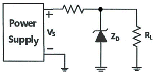
- 117[Ω]
- 120[Ω]
- 123[Ω]
- 126[Ω]
(정답률: 54%)
3. 다음 그림은 출력이 10[V]로 유지할 수 있도록 설계된 다이오드 정전압회로이다. 제너 전류가 최소(IZK) 4[mA], 최대(IZM) 40[mA]일 때, 이들 전류에 대한 최소 입력전압은?
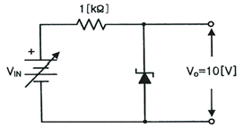
- 10[V]
- 14[V]
- 1.0[V]
- 1.4[V]
(정답률: 64%)
4. 부궤환 증폭회로의 특징으로 틀린 것은?
- 비직선 일그러짐 감소
- 잡음감소
- 이득 증가
- 대역폭 증대
(정답률: 68%)
5. 다음 중 A급 전력 증폭회로에 대한 설명으로 틀린 것은?
- 입력 신호의 전 주기에 대하여 항상 비활성영역에서 증폭동작을 한다.
- 입력 풀력 파형은 일그러짐이 없이 똑같은 형태를 유지한다.
- 종단의 대신호 증폭에는 전력 손실이 크게 발생되므로 효율이 좋지 않다
- 직접 부하를 출력에 접속하는 직접 결합방식과 변압기를 경유하여 접속하는 변압기 결합방식으로 구분된다.
(정답률: 67%)
6. 다음과 같은 입력전압 파형과 출력전류 파형을 나타내는 전력증폭회로의 동작등급은? (단, 증폭회로의 이득은 1이다.)
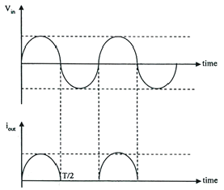
- A급
- AB급
- B급
- C급
(정답률: 75%)
7. 다음과 같은 증폭기의 교류 입력전압의 크기가 20 [mV]일 때 교류 출력전압의 크기는 약 얼마인가?
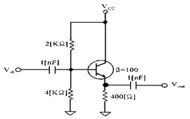
- 20[mV]
- 30[mV]
- 40[mV]
- 50[mV]
(정답률: 71%)
8. 정현파 발진기로서 부적합한 것은?
- LC 발진기
- 수정발진기
- 멀티바이브레이터
- CR 발진기
(정답률: 80%)
9. 게이트와 소스 단자 사이의 전압이 0일 때, 드레인 전류가 상수가 되는 FET의 드레인-소스 단자 사이의 전압은 무엇인가?
- 바이어스 전압
- 핀치-오프 전압
- 컷-오프 전압
- 포화 전압
(정답률: 81%)
10. 다음 중 병렬 전류궤환회로의 임피던스 특성으로 옳은 것은?
- 입력 임피던스는 증가하고, 출력 임피던스는 감소한다.
- 입력 임피던스는 감소하고, 출력 임피던스는 증가한다.
- 입력 임피던스와 출력 임피던스는 둘 다 증가한다.
- 입력 임피던스와 출력 임피던스는 둘 다 감소한다.
(정답률: 74%)
11. 3[㎒]의 반송파를 주파수가 5[㎑]인 신호파로 주파수변조 하였을 때 최대 주파수편이가 ±80[㎑]라면 소요 대역폭은?
- 40[㎑]
- 80[㎑]
- 85[㎑]
- 170[㎑]
(정답률: 80%)
12. 다음 중 주파수변조를 진폭변조와 비교한 설명으로 틀린 것은?
- 페이딩의 영향이 적다.
- 주파수의 혼신방해가 적다.
- 사용주파수대역이 좁다.
- S/N비가 개선된다.
(정답률: 80%)
13. 다음 중 디지털 신호전송방식에 대한 설명으로 틀린 것은?
- 기저대역전송은 디지털신호를 그대로 또는 다른 전송부호로 변환하여 전송하는 방식이다.
- 반송대역전송은 디지털변조하여 전송하는 방식이다.
- 기저대역전송은 대역폭이 좁은 반면 전송 가능한 거리가 길다.
- 반송대역전송을 하기 위해서는 반송파가 필요하다.
(정답률: 69%)
14. 진폭 변조시 주파수 영역에서 스펙트럼 겹침현상이 발생되지 않고, 피변조파의 포락선이 변조신호 형태와 같기 위한 조건으로 올바른 것은? (단, fc는 반송파 주파수, B는 변조신호 대역폭, m은 변조도이다.)
- fc ＜ B, m ≤ 1
- fc ＜ B, m ＞ 1
- fc ＞ B, m ≤ 1
- fc ＞ B, m ＞ 1
(정답률: 69%)
15. 다음 회로의 입력에 정현파를 넣었을 때 출력 파형은?
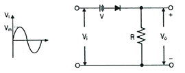
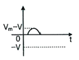
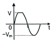
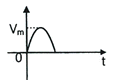
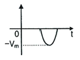
(정답률: 68%)
16. 트랜지스터의 스위칭 작용에 의해서 발생된 펄스 파형에서 턴 오프 시간(turn-off time)은 무엇인가?
- 하강시간+축적시간
- 상승시간+지연시간
- 축적시간+상승시간
- 지연시간+상승시간
(정답률: 78%)
17. 이상적인 펄스 파형에서 펄스폭이 30[μs]이고, 펄스의 반복 주파수가 1[kHz]일 때 점유율은?
- 3[%]
- 7[%]
- 30[%]
- 70[%]
(정답률: 70%)
18. 다음 중 플립플롭을 구성하는데 필요한 회로는 어느 것인가?
- 비안정 멀티바이브레이터
- 쌍안정 멀티바이브레이터
- 무안정 멀티바이브레이터
- 단안정 멀티바이브레이터
(정답률: 74%)
19. 다음 논리 회로는 어떤 논리 게이트 (Logic Gate )로 동작하는가?
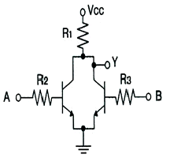
- OR
- NOR
- NAND
- AND
(정답률: 60%)
20. 다음 중 Master-Slave 플립플롭은 어떤 현상을 해결하기 위해 사용되는가?
- Race 현상
- Toggle 현상
- 펄스 지연 현상
- 반전 현상
(정답률: 81%)
2과목: 무선통신 기기
21. 베이스 회로의 시정수로 결정되는 주기로서 발진이 반복되는 현상은?
- 기생진동
- 인입현상
- 콜핏츠 발진
- 블로킹 발진
(정답률: 62%)
22. 다음 중 AM 송신기에서 기생진동의 방지 방법에 대한 설명으로 틀린 것은?
- 스켈치 회로를 사용하고 발진기를 A급으로 동작 시킨다.
- 성능이 우수한 발진기를 사용한다.
- 무선주파 회로의 배선을 짧게 한다.
- 증폭단 사이의 차폐를 완전히 하고 접지를 한다.
(정답률: 66%)
23. SSB(Single Side Band) 통신에서 자국 송신기와 상대국 수신기의 반송주파수를 일치(동기)하도록 해야 하는데 이러한 동기를 미세하게 조정하는 것을 무엇이라 하는가?
- 자동 선택도 조정회로(ASC: Automatic Selectivity Control Circuit)
- 자동이득 조절회로(AGC: Automatic Gain Control Circuit)
- 비트 주파수 발진기(Beat Frequency Oscillator)
- 스피치 크라리파이어(Speech Clarifier)
(정답률: 64%)
24. 다음 중 간접FM 송신기의 구성으로 적합하지 않은 것은?
- 수정 발진기
- 위상 변조기
- 완층 증폭기
- 주파수 변별기
(정답률: 73%)
25. 다음 중 QAM 시스템의 신호에 대한 설명으로 옳은 것은?
- 위상과 진폭의 조합으로 구성된다.
- 위상과 주파수의 조합으로 구성된다.
- 주파수와 진폭의 조합으로 구성된다.
- 주파수와 반송파의 조합으로 구성된다.
(정답률: 74%)
26. k비트로 구성된 심볼의 M = 2K 개 심볼상태를 표현하는 MFSK(Multiple Frequency-Shift Keying)에 대한 설명으로 틀린것은?
- MFSK는 동기식 복조만이 가능하다.
- 직교하는 M개의 주파수 정현파를 사용한다.
- k가 커지면 사용되는 주파수 개수가 지수적으로 증가한다.
- M이 커짐에 따라 사용되는 대역폭이 증가한다.
(정답률: 71%)
27. 다음 중 스펙트럼 확산(spread spectrum) 변조 방식에 대한 대한 설명으로 틀린 것은?
- 복조는 비동기 검파방식만 사용한다.
- 전송 중의 신호전력 스펙트럼 밀도가 낮다.
- 확산계수가 클수록 비화성이 우수하다.
- 혼신이나 페이딩 등에 강하다.
(정답률: 65%)
28. 전송할 신호의 주파수에 비해 높은 주파수의 반송파를 이용하여 1과 0을 진폭, 주파수 및 위상에 대응하여 전송하는 방식은?
- 문자 동기 전송 방식
- 대역 전송 방식
- 차분 방식
- 다이코드 방식
(정답률: 75%)
29. 이동전화 시스템에서 사용하고 있는 핸드오프(Hand-Off) 기능에 대해 맞게 설명한 것은?
- 이동전화단말기와 기지국간의 통화종료를 의미한다.
- 이동전화교환국과 기지국간의 정보전송속도의 변경을 의미한다.
- 이동전화단말기가 통화 중에 이동시 통화채널이 인접기지국에 자동 절환 되는 것을 의미한다.
- 발신과 착신의 신호 송출 기능을 의미한다.
(정답률: 80%)
30. 레이다 송신기의 구성 장치 중에서 마그네트론(Magnetron)에 대한 설명으로 가장 적합한 것은?
- 일정한 반복 주기를 가진 직류펄스(Trigger Pulse)를 발생시키는 장치이다.
- 트리거(Trigger) 신호에 의하여 짧고 강력한 펄스 형태의 전파를 발생시키는 장치이다.
- 직류 펄스를 펄스폭이 0.1~1[㎲]인 펄스 전압으로 바꾸어 레이다 펄스폭을 결정하는 장치이다.
- 스캐너를 통하여 받은 물표의 반사 신호를 증폭시켜 영상 신호로 바꾸어 지시기에 보내는 장치이다.
(정답률: 73%)
31. 다음 중 정지궤도위성을 이용한 통신방식의 장점이 아닌 것은?
- 3개의 위성으로 극지방을 제외한 전 세계 통신망 구성이 가능하다.
- Point To Point 네트워크 구성이 가능하다.
- 전파지연이 크지만 전송손실은 거의 없어 효율이 높다.
- 위성을 추적할 필요가 없다.
(정답률: 73%)
32. 다음은 GPS 코드에 대한 설명으로 잘못된 것은?
- P코드는 처음에는 군용 이였지만 민간에서도 이용하고 있다.
- 민간용으로 C/A 코드를 사용한다.
- 군용으로는 P코드를 사용한다.
- C/A코드의 정밀도는 10[m] 내외의 정밀도를 갖는다.
(정답률: 75%)
33. 다음 항법 장치 중 무선 항법 장치가 아닌 것은?
- SSR
- DME
- VOR
- TACAN
(정답률: 59%)
34. 다음 중 전원을 끊김없이 공급할 수 있는 장치는?
- TRANSFORMER
- AVR
- CONVERTER
- UPS
(정답률: 76%)
35. 다음 중 상용부하에 대한 전력공급은 충전기가 담당하고, 충전기가 부담하기 어려운 대전류 부하는 축전지가 부담하게 하는 충전방식을 무엇이라 하는가?
- 초충전(Intial Charge)
- 균등충전(Equality Charge)
- 부동충전(Floating Charge)
- 평상충전(Normal Charge)
(정답률: 68%)
36. 다음 중 납 축전지를 양극판 종류에 따라 분류한 것으로 맞는 것은?
- 클래드식(Clad Type), 소켓식((Socket Type)
- 소켓식((Socket Type), 피에조식(Piezo Type)
- 클래드식(Clad Type), 페이스트식(Paste Type)
- 피에조식(Piezo Type), 페이스트식(Paste Type)
(정답률: 64%)
37. 다음 내용을 나타내는 용어는?
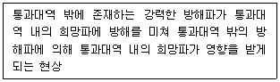
- 스퓨리어스 레스폰스
- 혼변조
- 잡음감도
- 감도 억압효과
(정답률: 71%)
38. 수신기 특성 중 1신호 선택도에 해당되지 않는 것은?
- 감도 억압 효과
- 근접 주파수 선택도
- 영상 주파수 선택도
- Spurious Response
(정답률: 65%)
39. 전력측정에 사용되는 볼로메터(bolometer) 브리지법에 대해 잘못 설명한 것은?
- 볼로메터 소자란 전력을 흡수하면 온도가 변화하여 전기저항이 변하는 소자이다.
- 볼로메터 브리지법을 사용하면 주파수에 따른 측정오차가 발생한다.
- FM송신기의 전력 측정방법으로 사용된다.
- 볼로메터 소자로는 써미스터나 바레터(barreter)가 있다.
(정답률: 62%)
40. 급전선의 특성 임피던스 Zo와 급전선을 통과하는 전파의 전파속도 v를 알면 급전선이 가지는 인덕턴스값(L)을 알 수 있다. 다음 중 인덕턴스 값(L)을 구하는 식으로 맞는 것은?
- Zo/v
- v/Zo
- v×Zo
- 1/(v×Zo)
(정답률: 70%)
3과목: 안테나 공학
41. 다음 중 Brewster 각(θ)을 알맞게 설명한 것은? (단, n은 공기의 대지에 대한 굴절률이다.)
- θ = tan-1n으로 주어진다.
- 전반사가 일어나는 입사각이다.
- 투과계수가 0이 되는 각이다.
- 수평편파 조건일 때 존재한다.
(정답률: 63%)
42. 다음 중 산란형 페이딩에 대한 설명으로 맞는 것은?
- 동기성 페이딩인 경우가 많다.
- 짧은 주기의 페이딩이 연속적으로 발생한다.
- 변동의 크기가 대지 반사계수와 관계가 있다.
- 전계강도의 평균레벨은 변하지 않으나 진폭이 3[dB] 이하로 불안정하게 변한다.
(정답률: 62%)
43. 송신 안테나 높이가 4[m], 수신 안테나 높이가 1[m] 인 경우 직접파 통신이 가능한 전파가시 거리는?
- 약 8[km]
- 약 12[km]
- 약 16[km]
- 약 21[km]
(정답률: 65%)
44. 다음 중 정활의 법칙(Secant's Law)에 대한 설명으로 틀린 것은?
- 굴절률과 MUF의 관계를 알 수 있다.
- 겉보기 높이와 MUF와의 관계를 알 수 있다.
- 송수신점이 결정된 상태에서 MUF를 계산할 수 있다.
- 임계 주파수와 MUF로부터 전리층 입사 각도를 구 할 수 있다.
(정답률: 55%)
45. 어떤 전리층의 임계 주파수가 6[MHz]로 측정되었다. 이 전리층의 최대 전자밀도는?
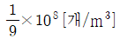
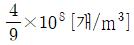
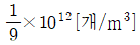
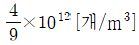
(정답률: 68%)
46. 비유전율이 25이고, 비투자율이 1인 매질 내를 전파하는 전자파의 속도는 자유공간을 전파할 때와 비교하여 약 몇 배의 속도인가?
- 0.1배
- 0.2배
- 0.3배
- 0.5배
(정답률: 72%)
47. 굴절률이 서로 다른 인접한 두 전리층간을 아래 그림과 같이 전파가 진행할 때 옳은 것은?
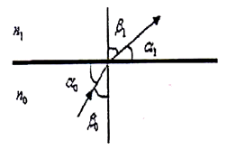
- n0sinα0 = n1sinα1
- n0sinβ0 = n1sinβ1
- n1sinα0 = n0sinα1
- n1sinβ0 = n1sinβ1
(정답률: 72%)
48. 다음 중 λ/4 수직접지 안테나의 특징으로 틀린 것은?
- 감쇄가 적은 수직편파 성분을 이용한다.
- 수평면내 무지향성, 수직면내 쌍반구형의 지향특성을 갖는다.
- 안테나 길이가 길어지면 수평면내 지향성이 작아진다.
- 장,중파용 안테나이다.
(정답률: 64%)
49. 다음 중 비동조 급전선의 설명으로 옳지 않은 것은?
- 급전선의 길이에는 사용파장과 무관하다.
- 급전선상에 정재파가 없고 진행파만 존재한다.
- 정합장치가 필요하다.
- 전송효율이 동조 급전선보다 나쁘다.
(정답률: 57%)
50. 다음 중 안테나의 정합회로에 해당되지 않는 것은?
- 테이퍼분배회로
- 형 정합회로
- T형 정합회로
- Y형 정합회로
(정답률: 67%)
51. 다음 중 절대이득의 기준 안테나는?
- 무손실 접지 안테나
- 무손실 루프 안테나
- 무손실 등방성 안테나
- 무손실 다이폴 안테나
(정답률: 49%)
52. 정합회로의 선로 임피던스 300[Ω]이고, 특성 임피던스가 600[Ω]이라고 하면 부하 임피던스 값은 얼마인가?
- 100[Ω]
- 150[Ω]
- 200[Ω]
- 250[Ω]
(정답률: 66%)
53. 다음 중 마이크로파 전송로로 사용되는 도파관의 특성에 대한 설명으로 적합하지 않은 것은?
- 복사손실이 거의 없다.
- 외부 전자계와 격리시킬 수 있다.
- 저역 여파기로 작용을 한다.
- 표피 작용에 의한 저항 손실이 매우 작다.
(정답률: 75%)
54. 다음 중 접지안테나 손실의 대부분을 차지하는 것은?
- 도체저항
- 유전체 손실
- 접지저항
- 코로나 손실
(정답률: 75%)
55. 다음 중 도파관 내에 존재하는 TE파 또는 TM파의 설명으로 틀린 것은?
- 도파관 내에서는 TE파나 TM파가 존재 할 수 있다.
- TE파는 E파, TM파는 H파라고도 한다.
- TE파는 전계가 전자파으 진행방향에 대해 직간인 면 내에만 존재하는 파이다.
- TM파는 전자파의 진행방향에 자계성분이 없는 파이다.
(정답률: 65%)
56. 자유공간에 있는 반파장 다이폴 안테나의 최대복사방향으로 5[km]인 지점에서의 전계강도가 5[㎷/m]일 때 안테나의 방사 전력은?
- 7.50[W]
- 10.25[W]
- 12.75[W]
- 17.25[W]
(정답률: 60%)
57. 사용주파수대역이 300㎒인 기기를 대상으로 일반인에 대한 전자파강도 기준에 적합한지 확인 중이다. 전기장강도가 28[V/M], 자기장강도가 0.073[A/m]인 경우 전력밀도는 얼마인가? (단, 소수점 첫째자리에서 반올림 처리조건)
- 1[W/m2]
- 2[W/m2]
- 3[W/m2]
- 4[W/m2]
(정답률: 54%)
58. 국내 전자파흡수율(Specific Absorption Rate, SAR)기준에 대한 설명으로 틀린 것은?
- 기준 적용이 되는 주파수 대역은 100㎑ ~10㎓이다.
- 일반인 대상 머리/몸통의 전자파흡수율 기준값은 1.6[W/㎏]이다.
- 사지에 대한 전파흡수율 기준은 임의 인체조직 5그램에 대하여 평균한 최댓값을 적용한다.
- 머리/몸통은 사지를 제외한 신체부위를 말하며 이 부분에 대한 전자파 흡수율 기준은 임의 인체 조직 1그램에 대하여 평균한 최댓값을 적용한다.
(정답률: 59%)
59. 다음 중 빔(Beam) 안테나에 대한 설명으로 옳지 않은 것은?
- 안테나의 배열간격은 주로 λ/2 이다.
- 근접주파수의 혼신 및 방해가 크다.
- 이득이 크고 지향성이 예민하다.
- 공전 및 인공잡음의 방해를 경감시킬 수 있다.
(정답률: 68%)
60. 다음 중 VHF대역 TV수신용 안테나로 가장 적합한 것은?
- 폴디드 다이폴 안테나
- 다이폴 안테나
- 혼 안테나
- 롬빅 안테나
(정답률: 61%)
4과목: 무선통신 시스템
61. 다음 중 디지털 통신에서 사용하는 채널코딩(Channel Coding)에 대한 설명으로 옳은 것은?
- 공간영역의 중복성을 제거하여 영상신호를 압축하는 것이다.
- 정보신호에 따라 반송파의 진폭 또는 주파수를 변화시키는 것이다.
- 데이터 전송 중에 발생하는 다향한 채널오류를 방지하여 통신능률을 향상시키는 것이다.
- 수신된 정보를 송신측에 되돌려주어 수신측에서 착오발생을 점검하는 것이다.
(정답률: 69%)
62. 다음 중 가시거리(Line of Sight) 통신에 적합한 주파수대역은?
- LF(Low Frequency)
- MF(Medium Frequency)
- SHF(Super High Frequency)
- VLF(Very Low Frequency)
(정답률: 62%)
63. 다음 중 무선 송신기에서 고조파 및 저조파 발사를 적게 하는 방법이 아닌 것은?
- 송신기와 급전선 사이에 필터를 삽입한다.
- 웨이브 트랩 회로를 삽입한다.
- Push-Pull 접속하여 우수차 고조파를 적게 한다.
- 출력 결합 회로의 Q를 낮춘다.
(정답률: 73%)
64. 다음 중 마이크로웨이브 중계 전송망 설계를 할 때 잡음 설계 시 고려해야 할 사항이 아닌 것은?
- Fresnel Zone의 계산
- 회선 품질의 목표치 결정
- 기본 열화
- 수신 입력단의 소요 C/N비
(정답률: 60%)
65. 다음 중 대역확산 통신시스템에서 대역을 확산시키는 방법이 아닌 것은?
- 직접확산(Direct Sequencce)방식
- 주파수도약(Frequency Hopping)
- 간접 확산(Indirect Sequencce)방식
- 시간 도약(Time Hopping)
(정답률: 56%)
66. 공공안전통신망에서 보조중계기의 역활은 무엇인가?
- 기지국의 송수신 주파수를 무선링크로 직접 재중계하여 전파음영지역의 통화권을 확장
- 기지국의 송수신 안테나를 유선링크로 직접 재중계하여 전파음영지역의 통화권을 확장
- 기지국의 송수신 증폭기를 무선링크로 직접 재중계하여 전파음영지역의 통화권을 확장
- 기지국의 송수신 결합기를 유선링크로 직접 재중계하여 전파음영지역의 통화권을 확장
(정답률: 64%)
67. PS-LTE 기술적 요구 사항 중 보안 관련 기능에 해당하지 않는 것은?
- 호설정(Call Setup)
- 권한 부여(Authorization)
- 인증(Authentication)
- 암호화(Encryption)
(정답률: 70%)
68. 방송미디어로 초고속인터넷을 통해 통신과 방송이 융합된 형태로 서비스를 제공하는 것은?
- DMB
- IPTV
- BcN
- D-TV
(정답률: 79%)
69. 다음 중 UWB(Ultra Wide Band)에 대한 설명으로 틀린 것은?
- 13.6[㎓]부터 18.1[㎓]까지 광대역을 사용 할 수 있다.
- 방사출력이 -41.25[dBm/㎒]를 넘지 않아야 한다.
- 최대 20[m]의 단거리에서 480[Mbps]이상의 대용량 전송이 가능하다.
- 변조 방식은 PPM(Pulse Position Modulation)방식을 이용한다.
(정답률: 53%)
70. 다음 LAN(Local Area Network) 전송방식 중 베이스밴드(Base Band) 방식의 특징에 해당되는 것은?
- 주파수분할다중화(FDM) 방식을 이용한다.
- 한 회선에 여러 개의 신호를 보낼 수 있다.
- 원래의 신호를 변조하지 않고 그대로 전송하는 방식이다.
- 통신경로를 여러 개의 주파수 대역으로 나누어 쓰는 방식이다.
(정답률: 72%)
71. 다음 중 WPAN(Wireless Personal Area Network)을 위한 전송 기술이 아닌 것은?
- Zigbee
- Bluetooth
- UWB
- PLC
(정답률: 68%)
72. 다음 중 다중 접속 환경에 최적화되어 공공 와이파이 환경에서도 최상의 인터넷 품질을 제공하는 것을 목표로 IEEE에서 고안한 Wi-Fi 규격으로 최대 10Gbps속도를 지원하고 Wi-Fi 6 라고도 표기되는 규격은?
- 802.11a
- 802.11ac
- 802.11af
- 802.11ax
(정답률: 68%)
73. 다음 중 무선 AP(Access Point)에서 공인 IP와 사설 IP를 상호 변환하는 기술은?
- NAT(Network Address Translation)
- DHCP(Dynamic Host Configuration Protocol)
- Teaming
- Virtualization
(정답률: 74%)
74. 다음 중 BASIC 프로토콜의 특성이 아닌 것은?
- 루프 형태의 데이터링크에 사용할 수 있다.
- 사용 코드에 제한이 있다.
- 연속적 ARQ 방식은 사용할 수 없다.
- 전이중은 불가능하다.
(정답률: 61%)
75. 위성통신에서 각 지구국에 채널을 할당하는 방식이 아닌 것은?
- 고정(사전) 할당 방식
- 요구(동적)할당 방식
- 임의 할당 방식
- 적응 할당 방식
(정답률: 64%)
76. 위성통신회선의 다원 접속방식이 아닌 것은?
- WDMA
- FDMA
- TDMA
- CDMA
(정답률: 65%)
77. 다음 중 무선 LAN 보안에 대한 설명으로 옳지 않은 것은?
- IEEE802.11b의 원래의 보안 메커니즘은 Static WEP이다.
- Static WEP는 40 또는 104비트 암호키를 사용한다.
- Static WEP은 802.1X를 이용한 상호인증을 포함한다.
- IEEE 무선 보안 표준은 Static WEP 외에 IV, Dynamic WEP, WPA 까지 포함한다.
(정답률: 52%)
78. 전력계로 송신기의 출력을 측정하였더니 0.1[W]가 측정되었다면 출력은 몇 [dBm]인가?
- 0.1
- 1
- 10
- 20
(정답률: 68%)
79. 스펙트럼분석기를 이용하여 측정 할 수 있는 주요 측정 항목으로 틀린 것은?
- 안테나 공급전력
- S 파라미터
- 점유주파수 대역폭
- 불요파
(정답률: 63%)
80. 다음 표에서 정의하는 계측장비는?
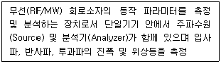
- 일반 전력계(Watt Meter)
- 오실로스코프(Oscilloscope)
- 네트워크 분석기(Network Analyzer)
- 스펙트럼 분석기(Spectrum Analyzer)
(정답률: 60%)
5과목: 전자계산기 일반 및 무선설비기준
81. 다음 중 “축소 명령어 집합 컴퓨터(RISC : Reduced Instruction Set Computer)” 구조에 대한 설명을 옳지 않은 것은?
- 주로 레지스터간 연산 명령어 집합으로 구성되어 있다.
- 제어장치 설계는 마이크로프로그래밍 기법을 사용한다.
- 간단하고 적은 수의 주소지정방식과 명령어를 사용한다.
- 주로 한 기계사이클 당 하나의 기계어가 수행된다.
(정답률: 52%)
82. 다음 중 병렬 입출력 방식(Parallel Input Output)에 대한 설명이 아닌 것은?[17년1회]
- 입·출력 제어장치와 입·출력 장치 사이에 데이터를 1~N 바이트(byte)씩 병렬로 전송하는 방식이다.
- 고속 데이터 전송에 적합하다.
- 단거리 전송에 이용된다.
- 데이터의 각 바이트의 시작과 끝을 인식하도록 시작과 정지를 비트를 사용한다.
(정답률: 59%)
83. CPU가 무엇인가를 하고 있는가를 나타내는 상태를 메이저 상태라고 하는데 다음 중 메이저 상태의 종류에 해당되지 않는 것은?
- Fetch 상태
- Indirect 상태
- Timing 상태
- Interrupt 상태
(정답률: 56%)
84. OSI 7계층 모델 중 각 계층의 기능에 대한 설명으로 틀린 것은?
- 물리계층 : 전기적, 기능적, 절차적 기능 행위
- 데이터 링크계층 : 흐름제어, 에러제어
- 네트워크 계층 : 경로 설정 및 네트워크 연결관리
- 전송 계층 : 코드 변환, 구문검색
(정답률: 74%)
85. IPv6의 주소길이는?
- 32bit
- 64bit
- 128bit
- 256bit
(정답률: 60%)
86. C 클래스의 네트워크 주소가 '192.168.1.0'이고, 서브넷 마스크가 '255.255.255.248'일 때, 최대 사용 가능한 호스트 수는? (단, 네트워크 주소와 브로드캐스트 호스트는 제외한다.)
- 6개
- 10개
- 14개
- 30개
(정답률: 60%)
87. 컴퓨터 네트워크의 라우팅 알고리즘의 하나로서 수신되는 링크를 제외한 나머지 모든 링크로 패킷을 단순하게 복사 전송하는 것을 무엇이라고 하는가?
- Flooding
- Filtering
- Forwarding
- Listerning
(정답률: 65%)
88. 데이터 정제에서 오류 우선 순위가 낮게 분류되었기 때문에 오류 수정을 연기한 상태를 나타내는 용어는?
- Closed
- Assigned
- Deferred
- Classified
(정답률: 68%)
89. 10진수 43과 이진수 10010011의 논리합(OR)를 맞게 변환한 값은?
- 10111011
- 10111000
- 10111110
- 10111111
(정답률: 67%)
90. 클라우드 컴퓨팅의 핵심기술이 아닌것은?
- 센싱기술
- 가상화 기술
- 분산처리 기술
- 오픈 인터페이스
(정답률: 64%)
91. 전파자원의 공평하고 효율적인 이용을 촉진하기 위하여 과학기술정보통신부장관은 주파수 이용현황의 조사 확인을 어느 기간 마다 실시해야 하는가?
- 매년
- 2년
- 5년
- 허가 기간 만료시
(정답률: 73%)
92. 다음 중 주파수분배의 고려사항이 아닌 것은?
- 국방ㆍ치안 및 조난구조 등 국가안보ㆍ질서유지 또는 인명 안전의 필요성
- 주파수의 이용현황 등 국내의 주파수 이용여건
- 전파를 이용하는 서비스에 대한 수요
- 과거의 주파수 이용 동향
(정답률: 72%)
93. 전파 관련 전문인력의 양성을 위하여 과학기술정보통신부장관이 시책을 마련하고 시행해야 하는 것으로 거리가 먼 곳은?
- 전파이용설비의 프로그램 알고리즘 교육의 지원
- 각급 학교 기타 교육기관에서 시행하는 전파교육의 지원
- 전파 및 방송기술 전문인력 양성사업의 지원
- 전파 관련 교육프로그램의 개발 보급 및 지원
(정답률: 63%)
94. 주파수 할당을 받은 자가 전기통신역무 등을 제공하기 위하여 개설하는 무선국으로 신고하고 개설 할 수 있는 무선국에 포함되지 않은 것은?
- 이동통신
- 서비스 제공지역이 전국이 아닌 주파수공용 통신
- 무선데이터 통신
- 휴대인터넷
(정답률: 68%)
95. 다음 중 무선국개설허가의 유효기간에 있어서 간이무선국과 육상이동국의 유효기간은?
- 1년
- 2년
- 3년
- 5년
(정답률: 57%)
96. 전파법의 목적을 가장 잘 표현한 것은?
- 전파이용 질서확립 및 전파이용 활성화를 통하여 국민의 복지 향상을 목적으로 한다.
- 전파기술의 개발 및 주파수 효율성을 향상하고 전파의 효율적인 운용을 목적으로 한다.
- 전파의 효율적인 이용 및 관리에 관한 사항을 정하여 전파이용 및 전파에 관한 기술의 개발을 촉진함으로써 전파의 진흥을 도모하고 공공복리의 증진에 이바지함을 목적으로 한다.
- 전파 이용 및 무선 종사자의 권익을 보호하고 올바른 전파질서 및 진흥을 도모함으로써 공공복지 및 주파수 자원의 합리적인 이용과 전파분야 기술개발을 통한 국가 경쟁력 강화를 목적으로 한다.
(정답률: 64%)
97. 방송통신기자재와 전자파장해를 주거나 전자파로부터 영향을 받는 기자재에 대하여 적합성인증을 받아야 하는 대상이 아닌 자는?
- 방송통신기자재 제조자
- 방송통신기자재 사용자
- 방송통신기자재 판매자
- 방송통신기자재 수입하려는 자
(정답률: 73%)
98. 다음 중 자기시험 적합등록 대상 기자재는 어느 것인가?
- 무선방위측정기
- 간이무선국용 무선설비의 기
- 주파수공용무선전화장치
- 방송통신기자재 수입하려는 자
(정답률: 52%)
99. 무선설비의 안테나계는 어떤 안전시설을 설치하여야 하는가?
- 절연체와 절연차폐체
- 절연저항 시험기
- 충전기구와 방전기구
- 낙뢰보호장치 및 접지시설
(정답률: 67%)
100. 의료용 전파응용설비의 안전시설 중 의료전극 및 그 도선과 발진기 출력회로, 전력선 등 사이에서 절연저항은 500볼트용 절연저항시험기로 측정하여 얼마 이상이어야 하는가?
- 20메가옴
- 30메가옴
- 40메가옴
- 50메가옴
(정답률: 69%)